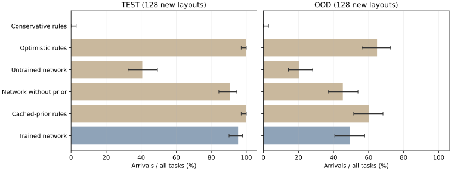
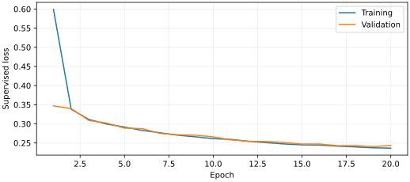

LEARNED NAVIGATION / RANDOM WORLDS
换一个环境，
模型还能找到路吗？
实际训练的卷积与神经价值迭代模型，在新岩石布局中决定下一移动方向。固定权重后，使用互不重叠的新种子比较规则、训练网络、未训练网络与去掉几何先验的网络。
01 / FIRST HELD-OUT EVALUATION
全部任务，包含失败。
分母包含不可达场景。完整报告另列可达场景，保留循环、停止、超时与碰撞。结果来自固定权重后的首次运行。

图中误差线为全部任务到达率的 95% Wilson 区间。MuJoCo 使用同一个已训练 v4 电机控制器，独立记录真实接触与物理轨迹。
02 / EVERY NEW WORLD
逐场查看模型走过的路线。
03 / TRAINING & LANGUAGE MODEL
训练记录与真实模型请求。
1024 个训练场景，64 个验证场景；20 轮监督优化。CNN 学习可通行概率，神经价值迭代输出八方向分数；观测更新、已见障碍门卫和八邻域拓扑有明确规则。
